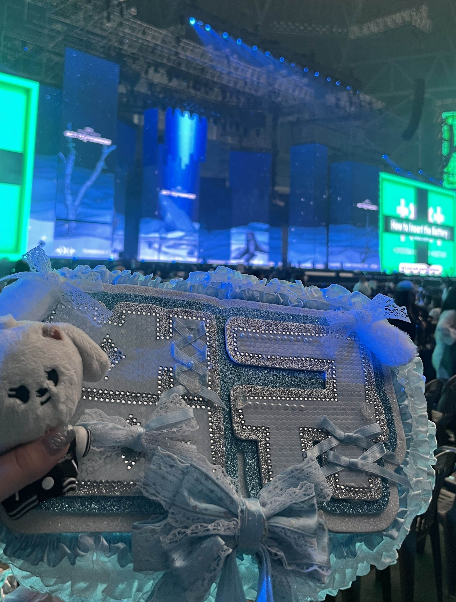
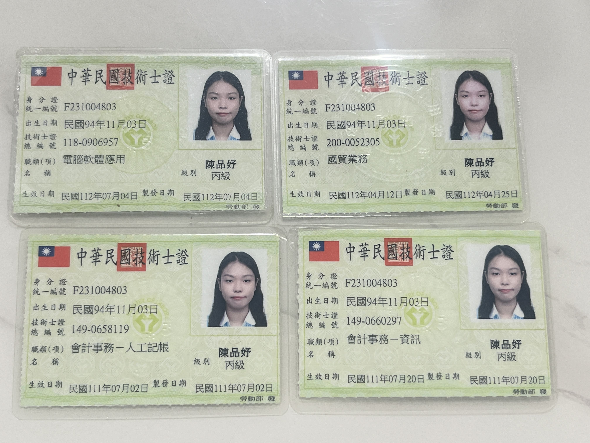
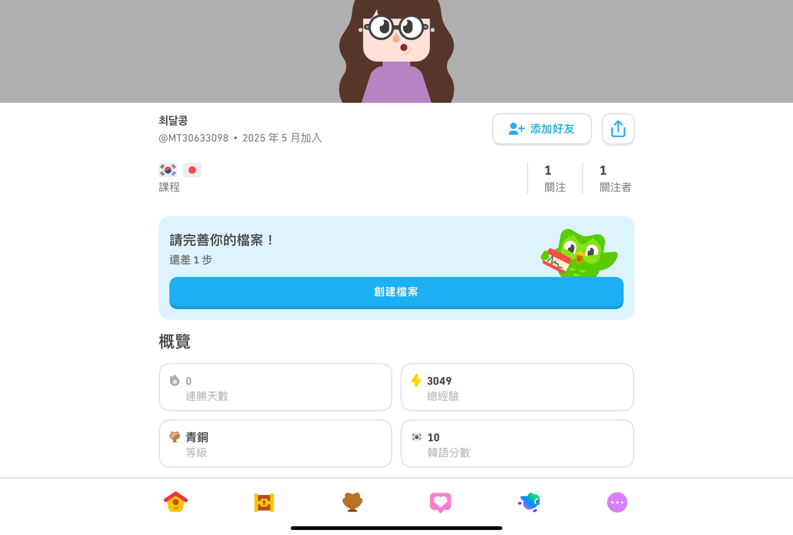
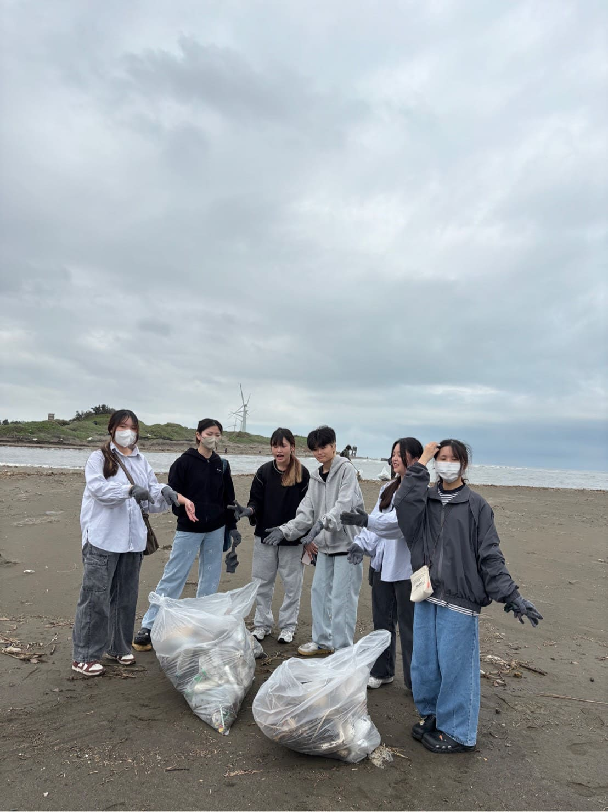
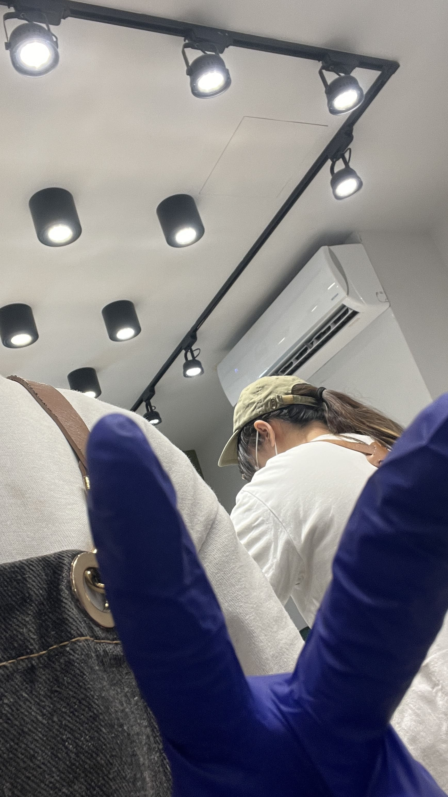

個人興趣

我的興趣是追星，主要接觸韓國的 K-Pop，而我最喜歡的團體是 TXT。我喜歡他們的音樂、舞台魅力和團員個性，追星成為我生活中很重要的樂趣。因為追星，我開始主動學韓文，從歌詞、綜藝到簡單對話都會慢慢學，讓我不知不覺培養出第二個興趣。
另外，追星也讓我有機會出國看演唱會，順便旅遊。每次到不同國家看表演，除了感受現場的氣氛外，也能體驗當地文化、景點和美食，讓追星變得更有收穫。對我來說，追星不只是娛樂，而是一個能讓我學到語言、擴展視野、累積旅行回憶的興趣。
個人技能
JAVA (60%)
PYTHON (65%)
HTML (75%)
Microsoft (80%)
個人證照
- 全國技術士檢定-電腦軟體應用丙級
- 全國技術士檢定-會計事務人工記帳丙級
- 全國技術士檢定-會計事務資訊丙級
- 全國技術士檢定-國貿業務丙級
多鄰國自學韓文
以多鄰國作為主要工具自學韓文，規劃固定學習進度並累積長期連續練習紀錄，具備初階聽讀與簡易會話能力。透過自學過程展現高度自律、學習規劃能力與主動提升語言能力的意願，可將所學應用於旅遊與跨文化互動。
管理學課程 服務學習成果
 下載影片服務學習 – 海岸淨灘行動
與同組成員合作完成海岸廢棄物清理與分類，負責協調分工與現場流程。透過活動累積了團隊合作、問題解決與時間管理能力，並提升對永續與環境議題的理解。
經歷三
這是我第一份由自己主動投遞履歷取得的飲料店工作。主要負責點餐、製作飲品、備料與門市清潔，過程中熟悉基本營運流程，並在高客流量的情況下訓練臨場反應、溝通能力與服務態度，也培養了穩定的工作責任感。